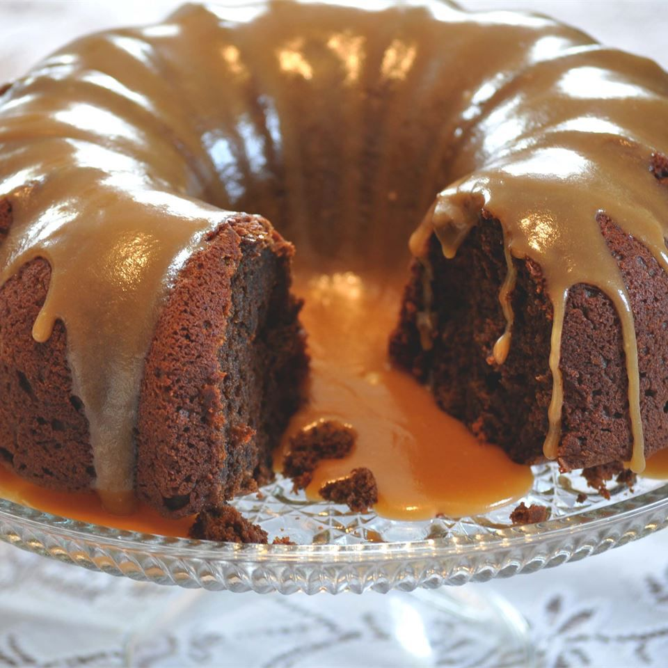

Pumpkin Chocolate Dessert Cake

Ingredients
- 2 2/3 cup all purpose flour
- 2/3 cup unsweetened cocoa powder
- 1 1/2 tablespoons pumpkin pie sauce
- 2 teaspoons baking powder
- 1 teaspoon baking soda
- 3/4 cup butter
- 2 cups white sugar
- 1/3 cup applesauce
- 3 eggs, beaten
- 1/2 cup heavy cream
- 1 (15oz) can pumpkin
- 1 cup brown sugar
- 1/2 cup butter
- 1/3 cup heavy cream
- 1 cup powdered sugar
Directions
- Preheat the oven to 350 degrees F (175 degrees C). Lightly grease a 9-inch Bundt pan.
- In a medium bowl, mix flour, cocoa powder, pumpkin pie spice, baking powder, and baking soda. In a large bowl, beat together 3/4 cup butter, 2 cups sugar, applesauce, and eggs. Mix in 1/2 cup heavy cream and pumpkin. Stir into flour mixture just until blended. Spread evenly in the prepared pan.
- Bake 40 minutes in the preheated oven, or until a toothpick inserted into the center of cake comes out clean. Allow to cool in the pan over a wire rack. Invert cake onto a serving plate.
- Place brown sugar, 1/2 cup butter, and 1/3 cup heavy cream in a medium saucepan. Bring to a boil while stirring to blend until smooth. Cook until sugar is dissolved. Whisk in confectioner's sugar and drizzle over cake immediately.